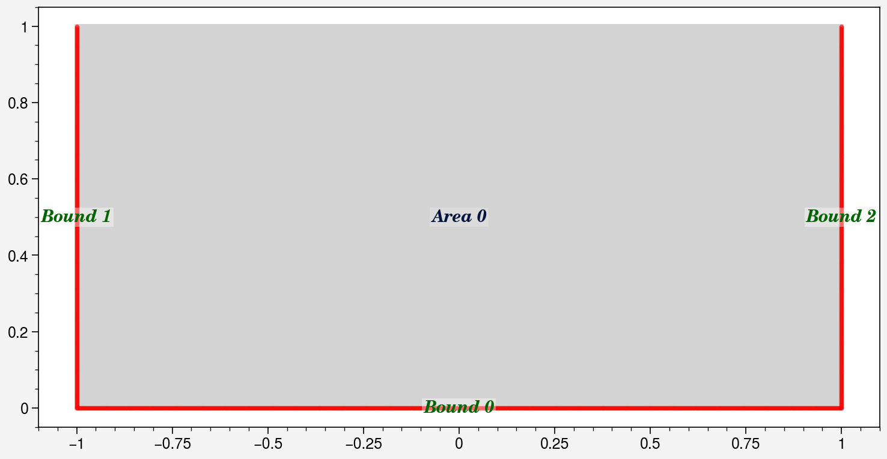
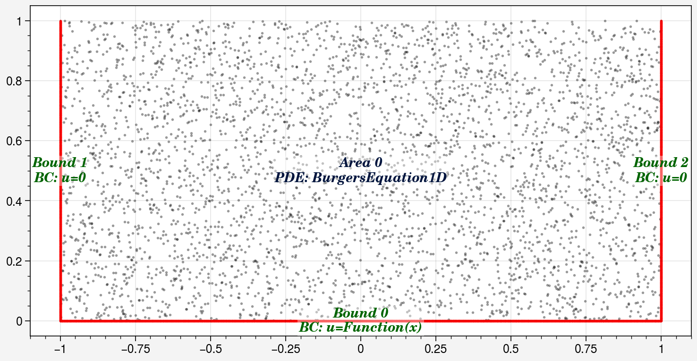
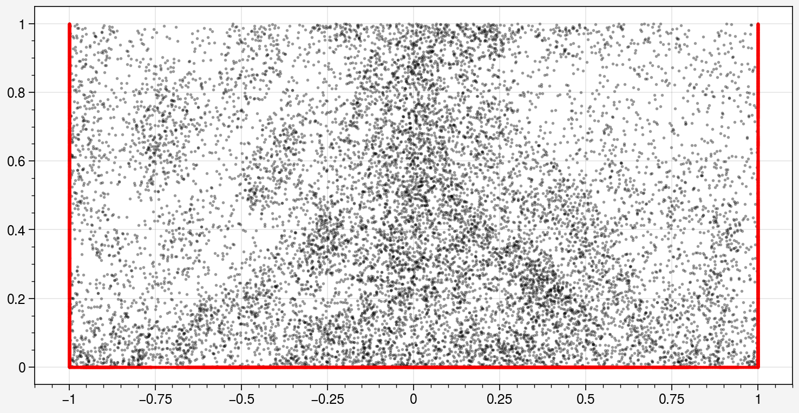
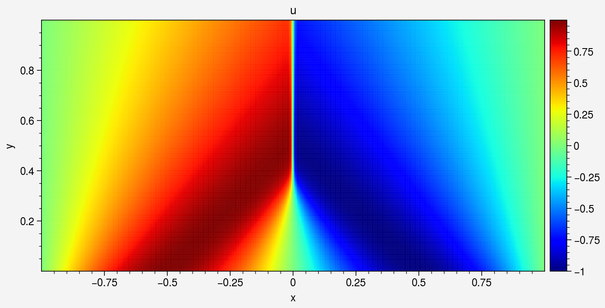
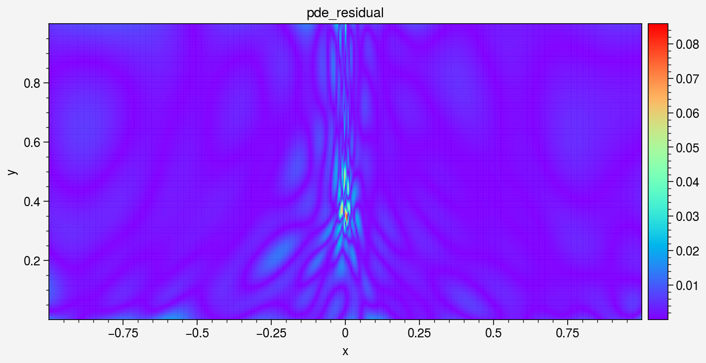
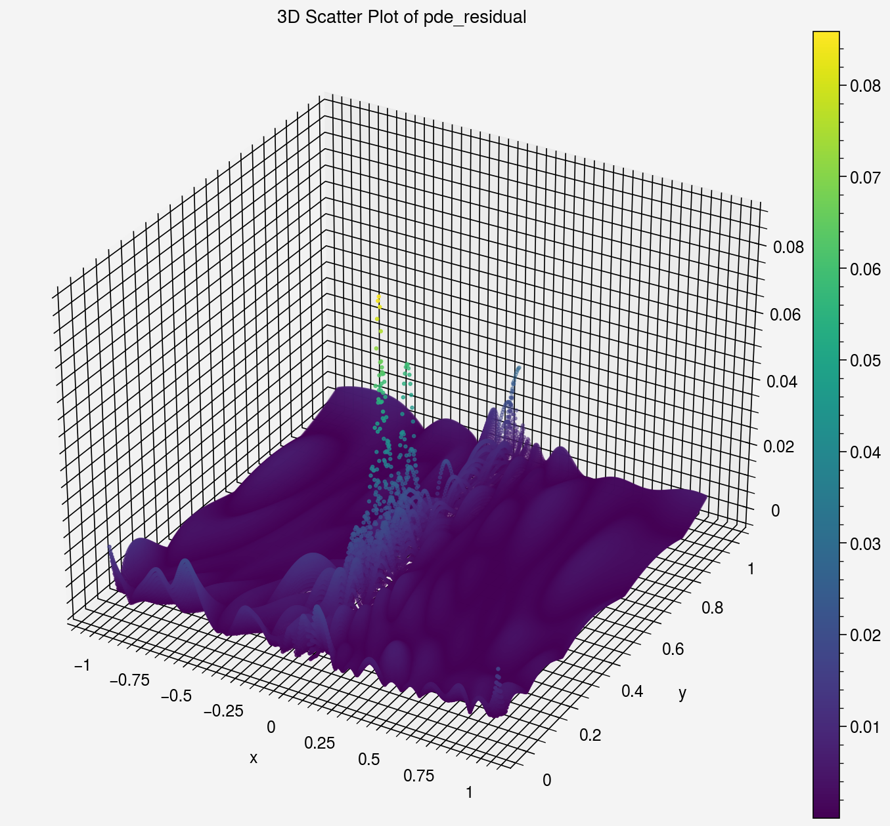
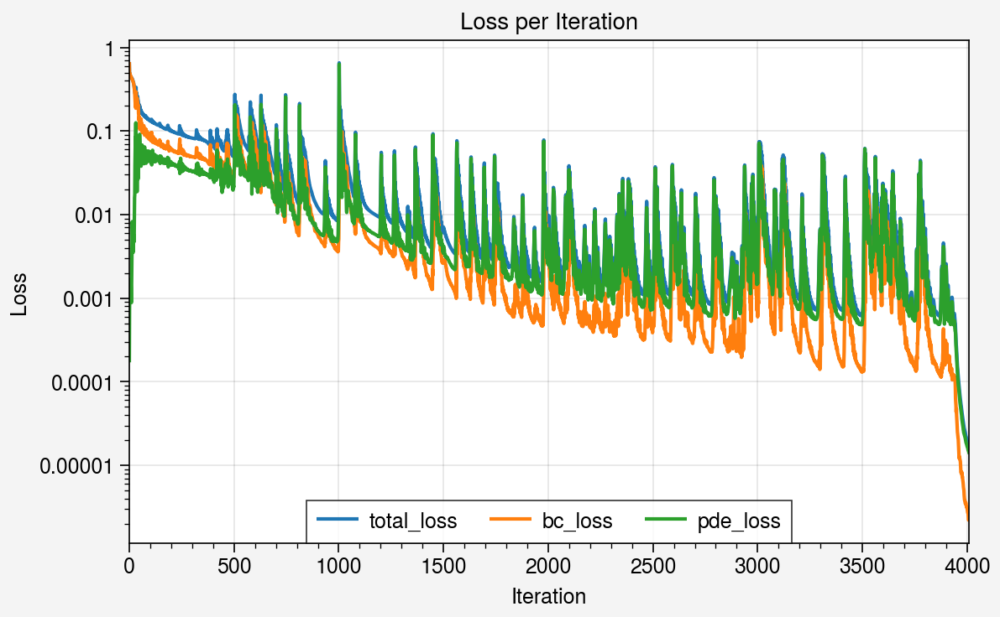
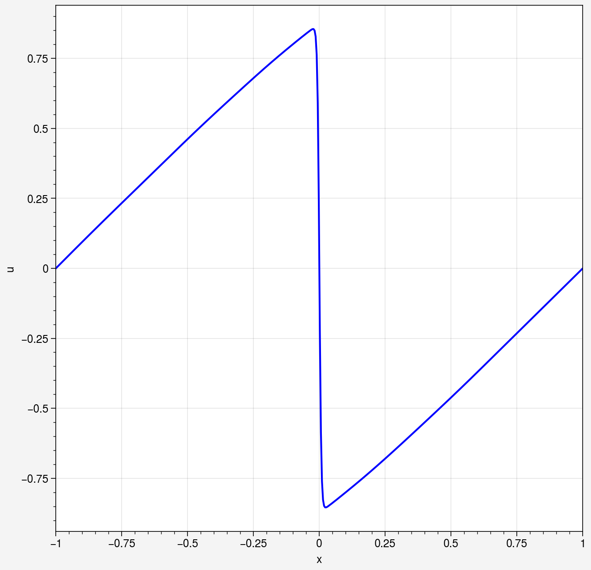

Solving the 1D Burgers Equation
This example solves the one-dimensional Burgers equation in its steady 2D
embedding — the equation DeepFlow models as BurgersEquation1D. It is a good
first example: the geometry is trivial, but the solution develops a sharp
shock-like front that makes it a stress test for point sampling.
At a glance
- Physics:
u_y + u · u_x = ν · u_xxwithν = 0.01/πon the domainx ∈ [-1, 1],y ∈ [0, 1], whereyplays the role of time. Initial conditionu(x, 0) = -sin(πx), homogeneous Dirichlet conditionsu = 0atx = ±1. - What to expect: the smooth
-sin(πx)profile steepens into a shock front asygrows, until it is absorbed by theu = 0boundary atx = 1. R3 resampling concentrates collocation points at the front. - Setup cost: FNN 16 × 4; Adam 4,000 epochs (lr 0.015) followed by L-BFGS 500 epochs; interior collocation points grow from 4,000 to ~13,000 via R3. Reference run: a few minutes on GPU.
- Verified against: DeepFlow v0.1.3 (candidate source commit
9f751fe).
1. Define the geometry
The domain is a rectangle; the initial condition and the two lateral
boundaries are separate Line geometries:
import deepflow as df
df.manual_seed(69) # for reproducibility
area = df.geometry.rectangle([-1, 1], [0, 1])
line_ic = df.geometry.line_horizontal(y=0, range_x=[-1, 1])
line_bc1 = df.geometry.line_vertical(x=-1, range_y=[0, 1])
line_bc2 = df.geometry.line_vertical(x=1, range_y=[0, 1])
domain = df.domain(area.area_list, line_ic, line_bc1, line_bc2)
domain.show_setup()

2. Define the physics
Attach the Burgers PDE to the area and the boundary/initial conditions to the
lines. DeepFlow uses hard boundary conditions, so define_bc both constrains
the network and generates the training data:
from torch import sin, pi
domain.area_list[0].define_pde(df.pde.BurgersEquation1D(nu=0.01 / pi))
domain.bound_list[0].define_bc({'u': ['x', lambda x: -sin(pi * x)]}) # IC at y=0
domain.bound_list[1].define_bc({'u': 0}) # x = -1
domain.bound_list[2].define_bc({'u': 0}) # x = +1
3. Sample training data
Initial sampling with Latin Hypercube Sampling (LHS), 2,000 points on the
initial-condition line and 4,000 in the interior. display_physics=True
colors the points by their role:

4. Train the model
The shock front moves as training progresses, so a static point set wastes samples. The R3 scheme (arXiv:2207.02338) re-samples every 500 Adam epochs, concentrating points where the residual is largest:
def do_in_adam(epoch, model):
if epoch % 500 == 0 and epoch > 0:
domain.sampling_R3([2000, 1000, 1000], [4000])
print(domain)
model0 = df.PINN(input_vars=['x', 'y'], output_vars=['u'], width=16, length=4)
model1, model1_best = model0.train_adam(
calc_loss=df.calc_loss_simple(domain),
learning_rate=0.015,
epochs=4000,
do_between_epochs=do_in_adam)
model2, model2_best = model1_best.train_lbfgs(
calc_loss=df.calc_loss_simple(domain),
epochs=500)
Reference-run result
Adam (4,000 epochs) + L-BFGS (500 epochs) converged to
total_loss ≈ 2e-5. The remaining error is dominated by the boundary
residual near the shock front.
After training, show_coordinates reveals how R3 has densified the point
set around the shock:

5. Visualize the solution
Evaluate the trained network on a uniform grid and plot the field, the PDE residual, and the loss history:
prediction = domain.area_list[0].evaluate(model2)
prediction.sampling_area([500, 250])
prediction.plot_color('u', cmap='jet', s=0.3).savefig('u_field.png')
_ = prediction.plot_color('pde_residual', cmap='rainbow', s=0.3)
_ = prediction.plot('pde_residual')
_ = prediction.plot_loss_curve(log_scale=True)




The shock front is clearly visible as a thin band of high PDE residual. A
1D slice at y = 0.75 shows the steep front directly:
line = df.geometry.line_horizontal(y=0.75, range_x=[-1, 1])
prediction = line.evaluate(model2)
prediction.sampling_line(500)
_ = prediction.plot(y_axis='u')

6. Optional: FEM reference comparison
If the [cfd] extra is installed (NGSolve backend), DeepFlow can solve the
same problem with a finite-element solver and report a mean absolute error
against the PINN solution:
try:
import ngsolve # noqa: F401
except (ImportError, OSError) as exc:
print(f'Skipping optional FEM comparison: {exc}')
else:
import numpy as np
fem_reference = domain.solve_fem(
mesh_size=0.5,
boundary_resolution=16,
max_iterations=3,
)
fem_area = fem_reference.area_list[0]
fem_area.sampling_area([100, 100])
fem_values = fem_area['u_ref']
pinn_area = domain.area_list[0].evaluate(model2_best)
u_error = float(np.mean(np.abs(pinn_area.data_dict['u'] - fem_values)))
if not np.isfinite(u_error):
raise RuntimeError('FEM comparison produced a non-finite error')
print(f'FEM mean absolute u error: {u_error:.6e}')
Run it yourself
Source notebook:
examples/burgers_eq/burgers_eq.ipynb
This page is hand-authored; the notebook is the source of truth (see REGENERATE.md).